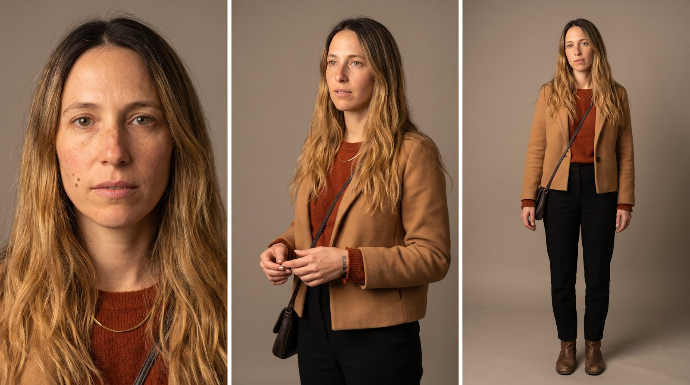
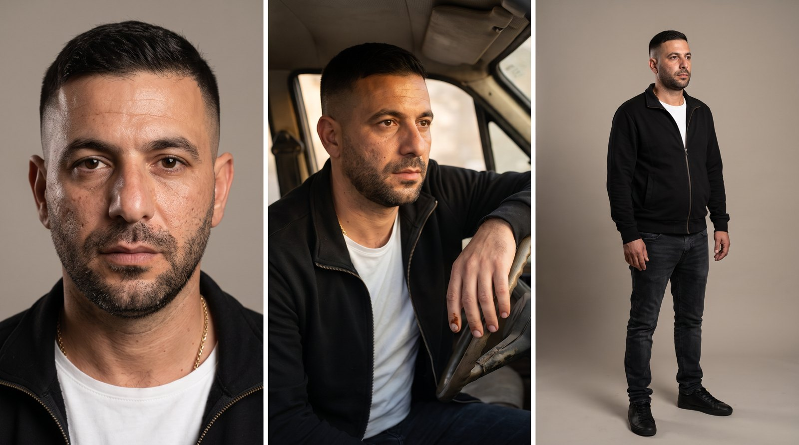
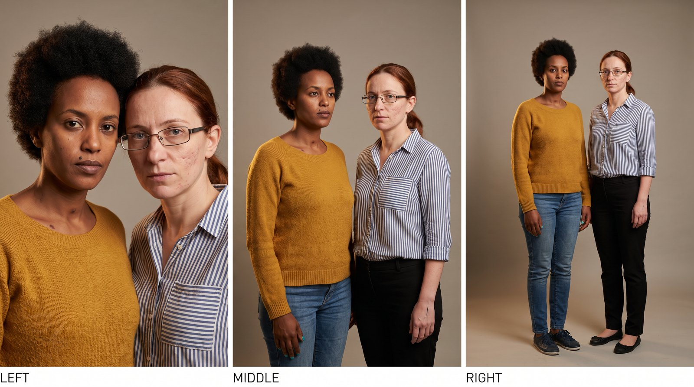
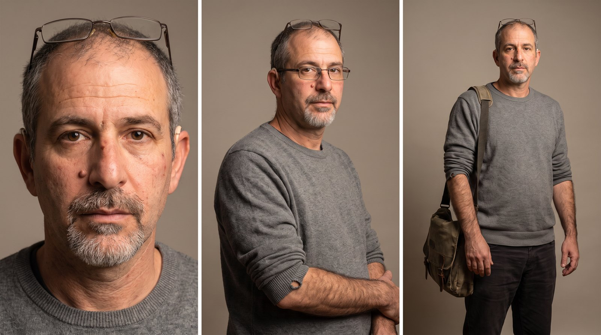
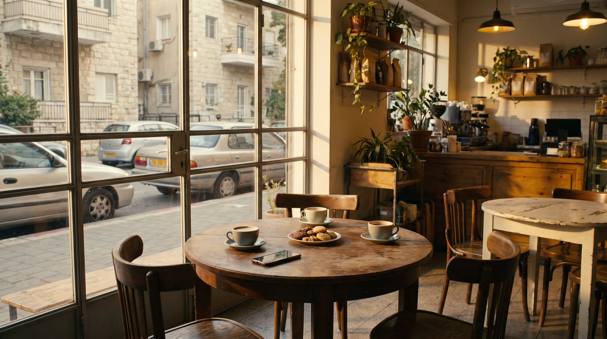
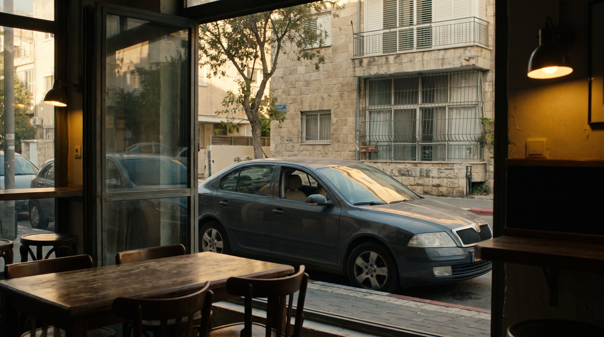

אגף הרווחה · עיריית שדרותקמפיין ליום המאבק באלימות במשפחה
בהפקת
אישה יושבת עם שתי חברות בבית קפה. ההודעות מבן הזוג מצטברות: איפה את, עם מי, תצלמי לי. ואז: "אני כבר פה." הרכב שלו עומד מול החלון. היא קמה ועוזבת. ברכב הוא רגוע.
כל דמות מוצגת בשלוש זוויות: פנים, שלושה-רבעים וגוף מלא, בלבוש של הסרטון. ככה היא תיראה בכל השוטים.

האישהבת 33, חילונית. שיער גלי בלונד כהה, סוודר חלודה, ז'קט קאמל. פנים פתוחות שנסגרות מהר.
בן הזוגבן 38, חילוני. ז'קט שחור, טי לבן. מופיע ברכב בסיום. לא מאיים במראה. גבות רגילות ונפרדות.
שתי החברותבת 34 עם בוב מתולתל וסוודר חרדל, בת 36 ג'ינג'ית עם משקפיים וחולצת פסים. חיוניות וחברותיות.
הגבר הזרבן 45, שיער מאפיר, משקפי קריאה, סוודר אפור. עסוק בעניינים שלו, לא קשור.
בית הקפהשולחן עגול לשלוש ליד חלון גדול לרחוב, שלוש כוסות, טלפון ליד כוס, הרחוב והמכוניות ממול נראים דרך הזכוכית. שמש אחר הצהריים.
הרכב ברחובנקודת המבט מהשולחן: רכב כהה חונה ממול, נראה דרך חלון בית הקפה. בסרטון הוא יושב במושב הנהג.לכל שוט: מה רואים, מה שומעים, איך המצלמה מצלמת, מה האור והקומפוזיציה, ומה הצופה אמור להבין ברגע הזה.
כל הטקסטים נבנים בעריכה, בעברית, באזור הבטוח של אינסטגרם. הנוסחים כאן לאישורכם.
חמשת הסרטונים מופקים דרך Efect, בהובלת אוראל לוי: תסריט, בימוי, יצירת הדמויות והסצנות, עריכה, סאונד וטקסטים, עד חמישה סרטונים מוכנים לפרסום.